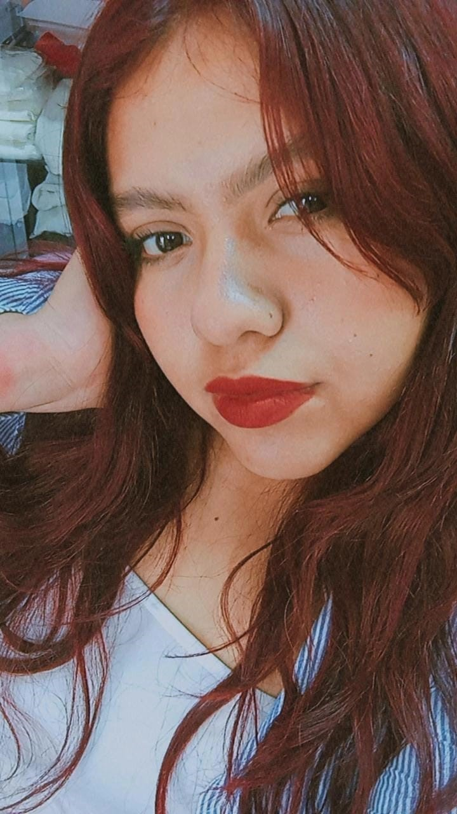

Soy Edma Ximena Palacios Villafaña
De Silao,Gto
¡Hola! Soy Ximena. Me considero una persona bastante extrovertida en muchos aspectos. Me encanta platicar y puedo pasar horas hablando de un montón de cosas. Me apasiona aprender cosas nuevas, me encantan los retos y me motiva mucho superarme, ya que suelo ser bastante competitiva.
Me atrae mucho el mundo de la tecnología y el diseño; me disfruta crear, resolver problemas y darle vida a ideas digitales. En mi tiempo libre me gusta escuchar música y desconectar un poco de la rutina.
La verdad es que la Ximena de hoy no se parece en nada a la de antes. He aprendido a valorar mi tranquilidad: si algo o alguien no me hace bien, pongo límites claros o me alejo, por mucho cariño que le tenga a la persona. Aunque a veces no lo parezca a simple vista, soy bastante sentimental.
También soy muy directa, y reconozco que a veces puedo llegar a hacer sentir mal a la gente con mis comentarios sin querer. Hablo con mucha gente y soy sociable, pero solo considero mis verdaderos amigos a tres personas.